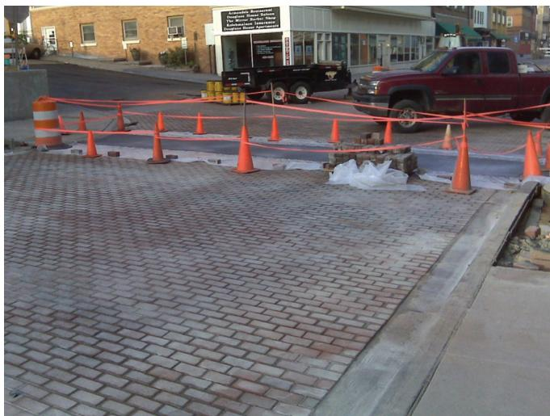
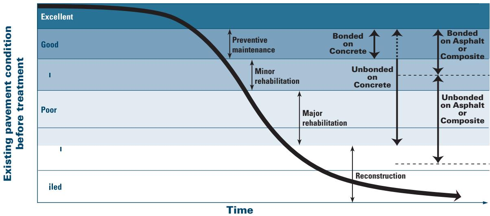
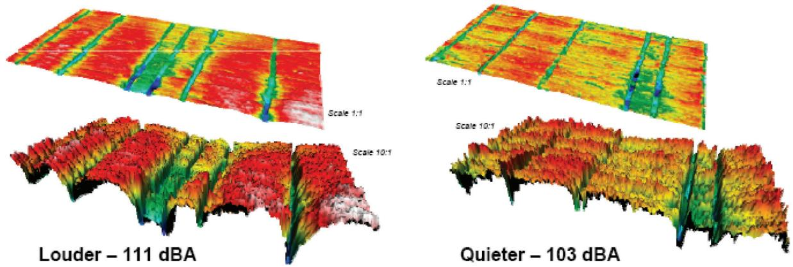
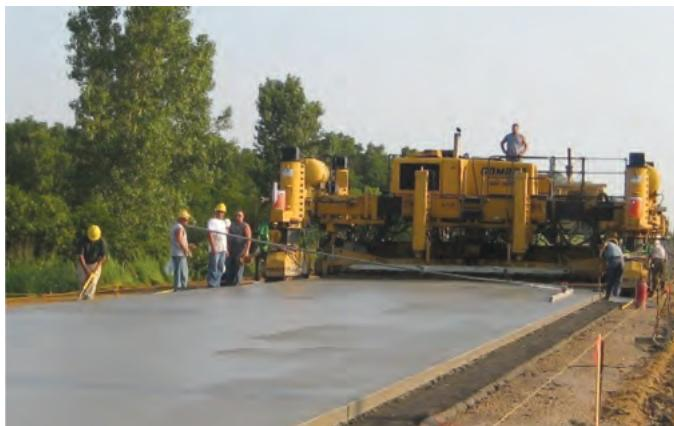

Sustainable Concrete Pavement Construction
Sustainable Concrete Pavement Construction is a decision‑making concept that guides owners, agencies and designers on whether to adopt a long‑life concrete pavement system—typically designed for thirty to sixty years of service—in place of a standard shorter‑life design for high‑volume roadways [2][5][6][8]. It seeks to deliver a durable, smooth riding surface with enhanced load‑carrying capacity and reduced maintenance (periodic diamond grinding only), while enabling rapid construction or overlay placement and providing environmental benefits such as high solar reflectance that mitigates urban heat island effects and lowers embodied carbon [2][3][5][6]. The approach integrates new mixture designs, increased slab thickness, corrosion‑resistant reinforcement, and light‑colored, high‑albedo concrete to achieve low life‑cycle costs, reduced user delays, and compliance with functional, safety and sustainability criteria [4][7][8].
Sources (8)
Purpose and decision context
The concept directs agencies, owners and designers to decide whether to employ a sustainability‑focused concrete pavement system. As one guide states, “Sustainable Concrete Pavement Construction is intended to support the decision of whether to adopt a long‑life concrete pavement design—typically lasting thirty to sixty years—for high‑volume roadways instead of a standard, shorter‑life design.” Another source notes that it “is meant to guide the choice of a pavement solution that extends service life, improves surface quality, increases load‑carrying capacity, speeds construction or renewal, mitigates urban heat island effects and enhances reflectance, while delivering an overall sustainable option.” A further description adds that “the Sustainable Concrete Pavement Construction concept is intended to guide owners, agencies and designers in deciding whether to adopt a sustainability‑focused concrete pavement solution for a transportation project.” Finally, regarding overlays, it “is intended to support the decision of whether to apply a concrete overlay as either a preservation or major rehabilitation treatment for an existing asphalt parking lot, favoring its use when it can add structural capacity, provide long‑life durability, and deliver environmental benefits such as high solar reflectance, reduced energy consumption, and resistance to vehicle leaks, especially when minimal pre‑overlay repairs are required.” [2][5][6][8]
The following figure illustrates this concept by showing vehicular interlocking concrete pavers being placed in a historic downtown area.

Vehicular interlocking concrete pavers being placed in a historic downtown area. [6]The image shows a paved surface constructed with interlocking concrete pavers, marked off by orange safety cones and tape during installation. Recent innovations have led to the installation of interlocking concrete pavers in Chicago that have a thin photocatalytic surfacing. The high reflectivity of these pavers will help mitigate the urban heat island effect.
[2] — Ch. 2 (pp. 31–32); [5] — Objectives (pp. 28–48); [6] — Ch. 1 (pp. 12–39), Ch. 6 (pp. 57–101), Ch. 11 (pp. 108–111); [8] — Overview of Concrete Overlay C… (pp. 12–13)
Sustainable concrete pavement construction addresses the problem of short‑service‑life, high‑maintenance roadways that generate frequent reconstruction, traffic delays, and sizable environmental impacts. The need is for a long‑life, low‑maintenance solution that can sustain heavy traffic while reducing embodied carbon, energy use, and urban heat island effects. Accordingly, the performance goal is to deliver pavements whose “design life represents the estimated time, in years, to reach a specified level of pavement distress,” typically targeting 30‑to‑60 year service with only periodic diamond grinding to restore smoothness, friction and noise limits. This is pursued through “new mixture design approaches and testing technologies … to support long‑life pavements” together with structural features such as increased slab thickness, higher stiffness, corrosion‑resistant dowels and stress‑relieving joints, and by employing light‑colored, high‑reflectance concrete that “providing a smooth, durable riding surface while substantially lowering lifecycle environmental burdens through reduced embodied carbon, enhanced reflectivity, smoothness, and longevity.” The overarching aim is to provide a durable, smooth riding surface that minimizes reconstruction cycles, material consumption, and user delays while meeting functional, safety and durability criteria. [2][3][4][5][6][7][8]
[2] — Ch. 2 (pp. 31–32); [3] — Ch. 1 (p. 37); [4] — Ch. 4 (p. 49); [5] — Benefits (pp. 20–28), Objectives (pp. 20–48), Sustainability (pp. 26–41); [6] — Ch. 1 (pp. 12–39), Ch. 6 (pp. 57–103), Ch. 11 (pp. 108–111); [7] — 2. Factors Influencing Long-Li… (p. 16); [8] — Overview of Concrete Overlay C… (pp. 12–13)
Scope and applicability
The guides agree that sustainable concrete pavement construction is appropriate whenever a project seeks a long‑life, low‑maintenance solution and can benefit from concrete’s durability, smoothness, and reflective properties. It is most often applied to new builds or major rehabilitations of high‑volume roadways where “In many circumstances, long-life designs (30 to 60 years) are generally justified for higher volume facilities as they may reduce costs, user delays, and environmental impacts over the life cycle as compared to a standard pavement design” and where “Longer-life concrete pavements are designed to resist structural and durability distress over the design life, requiring only periodic retexturing of the surface through diamond grinding to restore smoothness, friction, and noise performance.” The approach also fits a broad spectrum of assets—including “It suits a wide spectrum of projects—from high‑speed highways where noise mitigation is critical to low‑speed neighborhood streets that prioritize aesthetics, drainage or surface reflectivity, as well as urban corridors, rural routes, hydraulic structures, industrial sites and cargo‑handling areas—any asset that benefits from concrete’s durability, smoothness, and the ability to incorporate texture, color, and reflective surfaces” and “In addition, it fits bridge reconstruction or new urban pavements where lowering the material’s embodied carbon and the energy consumed during service can provide clear environmental gains.”
Across sources, sustainable concrete pavement is suitable at the design stage for selecting innovative types such as two‑lift, roller‑compacted, precast or thin concrete (“The design phase is also where innovative pavement design types, such as two‑lift concrete pavement, roller-compacted concrete (RCC), precast concrete and concrete pavers, and thin concrete pavement (TCP) will be considered”) and for incorporating surface texture, light color, long life, and storm‑water benefits (“In addition to these traditional design considerations, elements illustrated in Figure 2.4, including surface texture, light color, long life, and improved storm water quality can also be considered during the design process”).
During construction, “Construction of an overlay is much faster than reconstruction” and “Reconstruction costs are avoided,” making it ideal for overlays that “Provide a strong, durable pavement that will support heavy loads,” enable early opening (“Minimize traffic disruption and provide for required early‑opening to traffic”), lane widening or shoulder addition (“Widen a lane or add a shoulder in a cost‑effective manner”), and reduce the urban heat island effect (“Concrete pavement surfaces reflect light and reduce the urban heat island effect”).
For parking‑lot and other existing pavements, the guides note that “Concrete overlays can provide both pavement preservation and major rehabilitation solutions— either in and of themselves or in conjunction with spot repairs of isolated distresses, depending on the condition of the existing asphalt pavement.” When distresses are low to medium severity, “In most cases, minimal pre‑overlay repairs are necessary because the concrete overlay itself will fill in or otherwise correct low‑to medium‑severity distresses,” allowing adaptation to “Because of the wide range of overlay thicknesses that can be used, combined with the minimal pre‑overlay preparation required, concrete overlays provide cost‑effective, adaptable solutions for almost any existing pavement condition, desired service life, and anticipated loads.” However, if extensive spot removals or repairs would be required, an overlay “may not be the appropriate solution.”
Thus, sustainable concrete pavement construction is appropriate for new construction or major rehabilitation of high‑traffic highways, urban corridors, bridges, hydraulic structures, industrial and cargo‑handling areas; for overlay‑based preservation or rehabilitation of existing roads and parking lots with low‑ to medium‑severity distress; and at all project‑development stages from design through rapid construction and long‑term maintenance. [2][5][6][8]
The figure below illustrates typical applications for bonded and unbonded concrete overlays on existing concrete and asphalt or composite pavements.

Decision matrix for selecting pavement rehabilitation treatments based on existing condition and overlay type. [6]The figure displays a chart plotting the ‘Existing pavement condition before treatment’ against time, categorizing conditions from Excellent to Failed. It maps specific maintenance and rehabilitation strategies onto these conditions, distinguishing between bonded and unbonded concrete overlays as well as treatments for asphalt or composite pavements.
[2] — Ch. 2 (pp. 31–32); [5] — Benefits (p. 28), Objectives (p. 48); [6] — Ch. 1 (pp. 21–39), Ch. 6 (pp. 88–93), Ch. 11 (pp. 110–111); [8] — Overview of Concrete Overlay C… (pp. 12–13)
Sustainable concrete pavement construction is not appropriate when local conditions or project requirements outweigh the material’s inherent advantages. It should be avoided on high‑speed corridors where tire‑pavement noise is a primary community concern, and on low‑speed urban streets where aesthetics, reflectivity, or surface drainage are prioritized over noise reduction. The guides note that “the same communities that object to noise generated on a high-speed roadway may have a different set of criteria for local, slow-speed roads serving their neighborhoods,” and that “In such locations, tire-pavement generated noise may be far less an issue than aesthetics, high reflectivity, or surface drainage.” When the required structural capacity cannot be met without compromising durability—such as specifying a concrete thickness insufficient to carry traffic over the design life—the life‑cycle benefits are lost; “Specifying a concrete thickness insufficient to carry traffic over the design life can have large negative impacts on sustainability (economic, environmental, and social).” Additionally, if sufficient recycled or industrial‑by‑product aggregates are not available locally, transporting them negates environmental gains: “requires that sufficient recycled concrete be available; transporting recycled concrete aggregates long distances actually would have negative environmental impact due to the required transportation.” In densely built urban districts where impermeable surfaces accelerate storm‑water runoff and space for traditional drainage is limited, standard solid concrete exacerbates flood risk and sewer overload, prompting the selection of pervious concrete or other low‑impact solutions: “Precipitation runs off hard, impermeable surfaces … much faster than off undeveloped or vegetated ones,” and “For these reasons, innovative pavement solutions are acutely needed in urban areas, including the use of pervious concrete pavement surfaces.”
For overlay projects, a concrete overlay is unsuitable when extensive pre‑overlay repairs are required and are not cost‑effective; “If extensive pre‑overlay work is required for a specific project, and spot removals and/or repairs are not cost effective, an overlay may not be the appropriate solution.” When only minimal preparation is needed, overlays remain viable because they can address low‑ to medium‑severity distresses without major spot removal: “In most cases, minimal pre‑overlay repairs are necessary because the concrete overlay itself will fill in or otherwise correct low- to medium-severity distresses.”
Thus, across sources, sustainable concrete pavement construction—or its overlay variant—is preferable only when noise, structural capacity, material sourcing, storm‑water management, and preparatory work align with project goals; otherwise alternative pavement types or rehabilitation methods should be considered. [6][8]
The following figure illustrates specific features of concrete pavements that contribute to these sustainability goals.
 Diagram illustrating the environmental and performance benefits of sustainable concrete pavement construction. [6]
Diagram illustrating the environmental and performance benefits of sustainable concrete pavement construction. [6]
The figure displays a cross-section of a concrete pavement system annotated with various sustainability features, including light-colored surfaces for solar reflectance, industrial by-product use in materials, and improved stormwater quality through permeable layers.
[6] — Ch. 1 (pp. 26–39), Ch. 6 (pp. 99–101), Ch. 11 (pp. 110–111); [8] — Overview of Concrete Overlay C… (pp. 12–13)
Information needs
The guides indicate that sustainable concrete pavement construction requires a comprehensive data package covering condition, site, cost, traffic, environmental and stakeholder inputs. Condition information must include “traffic volume data”, “existing pavement condition” and “measurable indicators of surface roughness, texture, and structural stiffness”. Design planning also calls for the “anticipated design life of the pavement” and statements such as “The design life represents the estimated time, in years, to reach a specified level of pavement distress.” Site information is described as “detailed site information such as soil erodibility and the need for stabilized or non‑erodible bases”, “site information that supports avoiding disposal activities” and “primary geometric and material parameters—slab thickness, joint spacing, load‑transfer devices, edge support, drainage provisions, and the strength or erosion‑resistance of base materials” together with “local climate and environmental loading conditions that affect durability and albedo.” Cost considerations must capture both “higher initial costs and/or greater initial environmental impacts” and “cost data that capture low life‑cycle expenses and the savings from rapid opening to traffic”, while also being “evaluated over the full service life; both short‑term pressures to minimize initial expenditures and long‑term life‑cycle cost implications are required”. Traffic inputs include “initial traffic volume and its projected annual growth rate”, “traffic data reflecting volumes and driver frustration that justify a one‑day construction window” and “detailed volume, axle‑load, speed, vehicle‑type characteristics, and projected maintenance‑related delay durations”. Environmental information spans “material condition data including durable aggregates, supplementary cementitious materials and permeability testing like rapid chloride penetration”, “environmental information about the availability of industrial by‑products for the mix design”, “cradle‑to‑grave impact chain, quantifying raw‑material extraction, manufacturing, in‑service energy consumption, storm‑water quality effects, surface reflectivity (albedo), carbonation rates, runoff characteristics, leachate generation, and end‑of‑life recycling potential”, as well as “reflective, light‑colored surface’s impact on urban heat islands” and “solar reflectance”. Finally, stakeholder input is required in the form of “stakeholder input concerning safety visibility and user cost concerns”, “public expectations for sustainable built environments”, “agency mandates for measurable sustainability metrics” and “early involvement of everyone who is affected”. [2][4][5][6]
The following figure illustrates how surface texture characteristics, such as those resulting from transverse tining, directly influence pavement performance metrics like noise levels.

RoboTex scans of 100×200 mm samples showing variability of transverse tined surface and its effect on noise level (adapted from Rasmussen et al. 2008) [6]Each comparison includes a top-down view of the surface texture and a corresponding three-dimensional profile showing the depth and distribution of transverse tines.
[2] — Ch. 2 (pp. 31–32); [4] — Ch. 4 (p. 49); [5] — Sustainability (pp. 33–34); [6] — Ch. 1 (pp. 13–39), Ch. 6 (pp. 57–101), Ch. 11 (p. 108)
The information used for sustainable concrete pavement construction must be highly accurate, up-to-date, and comprehensive. Designers are required to fully understand pavement design principles, gather precise data, and apply the latest mechanistic‑empirical tools such as AASHTO DARWin‑ME to ensure that slab thickness, material properties, joint spacing, load transfer, drainage, supporting layers, and surface texture are all optimized for long‑life, low‑impact pavements. In parallel, the data must be as accurate as current modeling allows—recognizing that endpoint impact models are generally less precise than midpoint indicators—while also being comprehensive enough to cover a full suite of environmental categories such as acidification, climate change, ecotoxicity and resource use. This balanced, holistic approach guarantees that sustainable concrete pavements meet economic, environmental, and social performance goals without wasteful over‑design or under‑performance. [6]
[6] — Ch. 1 (pp. 27–28), Ch. 6 (pp. 99–101)
Alternatives
The guides suggest comparing a range of alternatives across four complementary groups.
-
Structural and system configuration – Options include “continuously reinforced concrete pavement (CRCP) versus jointed plain concrete pavement (JPCP)”, slab thicknesses from about twelve to fourteen inches, and design details such as stabilized bases, high‑durability aggregates with supplementary cementitious materials, corrosion‑resistant dowel bars, increased steel content, limited coefficient of thermal expansion, and stress‑relieving elements like tied shoulders or wide slabs. Additional system concepts mentioned are roller‑compacted concrete, precast panels or interlocking pavers, thin concrete pavement, and variations in joint spacing, load‑transfer devices, and base quality.
-
Material‑mix composition – The alternatives span a conventional Portland‑cement mix versus mixes that incorporate “industrial by‑products such as fly ash, slag cement or silica fume”, reduced‑cement or low‑carbon binders, high‑volume fly ash or other light‑colored supplementary cementitious materials to raise albedo, and optimized aggregate gradations that lower cement content. The guides also reference “photocatalytic or carbon‑sequestering cements” as a distinct mix option.
-
Construction approach – Feasible strategies include full reconstruction of an existing slab versus the “placement of a concrete overlay”, fresh placement versus in‑situ recycling of existing pavement combined with water‑recycling at the plant, and innovative processes such as two‑lift construction (wet‑on‑wet) or low‑energy construction methods that may embed sensing technologies.
-
Surface and functional treatments – Options range from “conventional dense‑graded concrete surface against a pervious concrete system” and “high‑albedo (lighter‑colored) mixes versus standard concrete”, to “conventional dark pavements versus high‑albedo concrete”, and plain concrete versus concrete treated with white titanium‑dioxide photocatalytic cement or coatings. Functional strategies also include “surface texture”, “stormwater management”, and “modular pavement systems”.
Each alternative should be evaluated against life‑cycle cost, carbon emissions, durability, structural compliance, storm‑water performance, urban heat island mitigation, noise, safety, and constructability over a 30‑ to 60‑year design horizon. [2][5][6]
[2] — Ch. 2 (pp. 31–32); [5] — Benefits (p. 28), Sustainability (pp. 26–41); [6] — Ch. 1 (pp. 13–39), Ch. 6 (pp. 59–101), Ch. 11 (pp. 108–111)
The concrete‑overlay option relies on the existing pavement as a base material and can incorporate industrial by‑products such as fly ash or slag, so it does not require full‑depth removal or new aggregate. Because the overlay can be placed and opened to traffic in a single day, construction time is short and disruption to users is minimal, avoiding the costs and frustration of longer closures. The source does not discuss specific risk factors for this option, but it notes that the approach yields a low life‑cycle cost with long service life and only minimal future maintenance. [5]
[5] — Sustainability (pp. 33–34)
Decision criteria
The guides concur that the decision for sustainable concrete pavement construction should be led primarily by sustainability, followed by durability, safety/performance, cost, schedule, accessibility and public impact. Sustainability is described as needing to “must be anchored first and foremost in sustainability criteria that capture the dominant life‑cycle impacts of the use phase—fuel consumption, emissions, heat‑island mitigation, carbonation, runoff, and maintenance‑related traffic delays.” Durability follows because a long‑lasting pavement enables the projected benefits; as noted, “Long life: Achieving the desired design life with minimal future preservation activities results in reduced user delays and associated economic and environmental impacts over the life cycle,” and “long‑life designs … may reduce costs, user delays, and environmental impacts over the life cycle.” Safety and functional performance must be satisfied within this framework, exemplified by “Smooth, quiet, and safe over the life cycle: Motorists experience a comfortable ride; drag is minimized for enhanced vehicle efficiency; pavement surface visibility and skid resistance are maximized through minimal preservation activities.” Cost efficiency is evaluated next, with “Cost effective: Demonstrated over the life cycle, concrete pavements preserve their equity long into the future.” Schedule considerations are addressed by “Expedite construction/renewal” and “Minimize traffic disruption and provide for required early‑opening to traffic.” Accessibility and broader public impact are considered thereafter, supported by the principle that “Public involvement must be early and continuous.” [2][5][6]
The following figure illustrates the pavement life-cycle phases that underpin these sustainability considerations.
 Pavement life-cycle phases diagram showing the progression from materials to end of life and associated environmental impacts. [2]
Pavement life-cycle phases diagram showing the progression from materials to end of life and associated environmental impacts. [2]
The figure illustrates a cyclical process flowchart that begins with ‘MATERIALS’ and proceeds through ‘CONSTRUCTION’, ‘USE’, and ‘END OF LIFE’. Curved arrows originating from the main phases point to specific environmental factors, including ‘Carbonation’, ‘Lighting’, ‘Albedo’, ‘Rolling resistance’, and ‘Leachate’.
[2] — Ch. 2 (pp. 31–32); [5] — Benefits (pp. 20–28), Objectives (pp. 20–48), Sustainability (pp. 26–34); [6] — Ch. 1 (pp. 12–39), Ch. 6 (pp. 60–101), Ch. 11 (pp. 108–111)
The guides agree that weighting must start with a life‑cycle perspective. When evaluating sustainable concrete pavement options, the criteria that reflect life‑cycle performance—such as total cost over 30 to 60 years and cumulative environmental impact—should be given greater weight than the higher initial construction expense or early‑stage emissions. Make engineering decisions that will ensure that the pavement will perform as desired for the intended life (likely 40 years or more). Consequently, structural performance—adequate slab thickness, joint detailing, base strength and drainage—is therefore given primary weight because it controls future maintenance frequency, traffic‑delay emissions and overall durability. Design choices that increase slab thickness, material stiffness, durability of aggregates, and corrosion‑resistant reinforcement are justified because they extend service life and reduce the need for frequent reconstruction, ultimately lowering user delays and overall resource use. Once durability is secured, Choose systems and approaches that will have minimum economic, environmental, and social cost, without compromising engineering quality. Design for what is needed. Overdesign is wasteful, but under‑design is even more wasteful because longevity of the system may be compromised. Secondary weighting is applied to life‑cycle impacts such as use‑phase smoothness, stiffness and high reflectivity, which dominate operational emissions, and to stakeholder‑derived social and community benefits. Sensitivity analyses are used to fine‑tune the relative importance of these secondary factors for each project context. Thus, decision makers should prioritize long‑term cost and impact savings while accepting modest upfront penalties as a trade‑off for lasting performance. [2][6]
The following figure illustrates the ecoprofile of different life-cycle phases for a typical road to contextualize these long-term impact considerations.
 Ecoprofile of different life-cycle phases from a typical road (Wathne 2010 based on EAPA 2004) [6]
Ecoprofile of different life-cycle phases from a typical road (Wathne 2010 based on EAPA 2004) [6]
The figure displays a stacked bar chart illustrating the percentage of environmental impacts attributed to various stages of a road’s life cycle, including construction, traffic, and end-of-life.
[2] — Ch. 2 (pp. 31–32); [6] — Ch. 1 (pp. 13–39), Ch. 6 (pp. 61–62), Ch. 11 (p. 108)
Analysis methods and tools
The sustainable concrete pavement approach relies primarily on a life-cycle assessment (LCA) framework to evaluate environmental and economic performance, incorporating factors such as rolling resistance, pavement roughness, texture, and stiffness that affect vehicle fuel consumption. By embedding mechanistic models of these effects into the LCA, agencies can quantify how smoother, stiffer concrete surfaces reduce fuel use over the design life. The source does not mention other typical evaluation tools like condition ratings, decision trees, life‑cycle cost analysis, risk assessment, or benefit‑cost analysis. [6]
[6] — Ch. 6 (pp. 58–59)
The results for sustainable concrete pavement construction rest on a set of inter‑related assumptions. The guides agree that a design life is assumed—a projected number of years (typically 20 to 40) needed to reach a predefined level of distress—based on initial traffic volumes and an annual growth rate. It is also assumed that concrete pavements retain their inherent longevity, that industrial by‑products such as fly ash or slag cement can be incorporated without compromising performance, and that high surface reflectivity will lower lighting energy needs and mitigate urban heat island effects. Designers further assume that traditional geometric variables—slab thickness, joint spacing, load‑transfer details, drainage provisions—and added features such as surface texture, light colour and storm‑water infiltration will behave as modeled and deliver the expected social and environmental benefits. The assumption extends to new cementitious mixes being able to cut Portland cement content without sacrificing performance or raising cost, and that stakeholders will adopt a life‑cycle perspective rather than a short‑term economic focus. It is also presumed that accurate material, traffic, climate and support‑condition data can be gathered and applied in advanced mechanistic‑empirical tools so that only the required amount of concrete is used, avoiding both overdesign and under‑design.
Uncertainties arise from several sources. Predicting future traffic growth and environmental conditions introduces variability into the estimated design life, and the actual rate at which distress manifests may differ from projections. The degree to which reflective surfaces actually reduce vehicle fuel consumption and emissions is uncertain, as is the consistency of performance for alternative supplementary cementitious materials over the pavement’s service life. Local site‑specific conditions—soil support, climate, drainage effectiveness, material properties—can cause slab behavior, joint performance and drainage to deviate from model expectations, requiring locally calibrated data. Emerging low‑carbon cements, bio‑derived admixtures, in‑situ recycling equipment and photocatalytic materials remain speculative; their market adoption rate and long‑term durability are uncertain. Limited site‑specific data on reflectance, carbonation rates and runoff leachate, as well as unpredictable traffic‑delay magnitudes during maintenance and variability in vehicle fleet composition, add further unpredictability to fuel‑efficiency and emission estimates. Finally, the assumption that the selected pavement type will remain unchanged after the design phase may be violated by construction or testing variations, especially those affecting smoothness, introducing additional uncertainty. [4][5][6][7]
[4] — Ch. 4 (p. 49); [5] — Sustainability (p. 26); [6] — Ch. 1 (pp. 21–39), Ch. 6 (pp. 58–103), Ch. 11 (p. 108); [7] — 2. Factors Influencing Long-Li… (p. 16)
Stakeholders and constraints
Input is supplied by a wide range of stakeholders. The guides note that “The primary input on sustainable concrete pavement comes from the public and professional bodies such as the ASCE Board of Direction, whose statements shape expectations,” and that “Input on sustainable concrete pavement design comes from the designers who consider slab thickness, joint spacing, drainage, surface texture, color, and other features, as well as material‑processing and construction specialists.” Early involvement of agency personnel, community members, owners, materials suppliers, and contractors is also called for. Designers (or engineers in the design office) are identified as the primary technical source: “The primary input for sustainable concrete pavement projects comes from the design office, where engineers decide which pavement type to use and set smoothness requirements,” and they must “Make engineering decisions that will ensure that the pavement will perform as desired for the intended life.” After the design stage, “Those design decisions are then handed to the construction team, whose on‑site activities and testing must meet the specified criteria to achieve long‑life performance,” meaning contractors implement and verify the choices. Final authority rests with the owning transportation agencies: “Final decisions and approvals are vested in the agencies that own the pavements—local, state, and federal transportation authorities—that now require sustainability metrics…” [6][7]
[6] — Ch. 1 (pp. 13–27), Ch. 6 (pp. 58–101), Ch. 11 (p. 108); [7] — 2. Factors Influencing Long-Li… (p. 16)
Selection of a sustainable concrete pavement is bounded by a suite of permits, standards, policies, funding rules, and design requirements that collectively limit the viable options. State highway agency design standards act as the primary constraints, demanding longer‑life configurations such as thicker slabs, high‑durability aggregates, corrosion‑resistant dowel bars, and supplementary cementitious materials that must meet permeability thresholds (ASTM C1202). Designs must incorporate stabilized bases, limited coefficients of thermal expansion, and stress‑relieving features like tied shoulders or widened slabs, and only pavement types that satisfy these detailed design requirements can be pursued under existing policies and funding rules. Federal airport funding rules further require any new mixture designs or testing methods to align with ACPTP‑sponsored studies and emerging specification provisions for alkali‑silica reactivity, performance‑enhanced materials, and rapid repair, obligating designers to adhere to these evolving standards. A design‑life requirement mandates that the pavement be engineered to reach a predefined level of distress within a specified number of years—typically 20 to 40 years based on roadway type, traffic, and environment—thereby limiting material selections, thicknesses, and construction methods. Regulatory permits also include compliance with EPA Storm Water Phase II regulations and the pursuit of LEED credits, which impose material‑sourcing, energy‑use, and overall environmental performance criteria. Safety standards and tire‑pavement noise limits shape structural and surface‑smoothness decisions, while project‑level requirements call for long life, improved surface condition, high load‑carrying capacity, low‑cost options, early opening, and provision for future lane widening or shoulder addition. All design details—slab thickness, joint spacing, load transfer devices, drainage, edge support, and appropriate base conditions—must be addressed within the AASHTO DARWin‑ME™ Mechanistic‑Empirical Design Guide (or locally calibrated versions). Context‑sensitive design policies further require early stakeholder engagement and adherence to agency sustainability objectives, recognizing that a single approach does not meet all needs. Finally, the pavement type and surface‑smoothness criteria are fixed during the office design stage, making early design decisions the primary regulatory constraint on subsequent construction activities. [2][3][4][5][6][7]
[2] — Ch. 2 (pp. 31–32); [3] — Ch. 1 (p. 37); [4] — Ch. 4 (p. 49); [5] — Objectives (pp. 36–48); [6] — Ch. 1 (pp. 21–39), Ch. 6 (p. 92), Ch. 11 (p. 108); [7] — 2. Factors Influencing Long-Li… (p. 16)
Timing and implementation
The decision for sustainable concrete pavement construction should be made in the design phase, specifically during the earliest stages of project design before detailed engineering work begins. At that point designers can bring together agency staff, community representatives, material suppliers and contractors to define environmental, social and performance criteria, embed early, continuous public involvement, and integrate sustainability into texture, drainage, aesthetics and structural choices. Making the choice in the design office ensures that pavement type selection is not revisited later during construction or testing. [6][7]
[6] — Ch. 1 (pp. 21–27); [7] — 2. Factors Influencing Long-Li… (p. 16)
The guides describe several events that trigger action for sustainable concrete pavement construction. Action begins “when a pavement serves a higher‑volume facility”, leading to the selection of a long‑life design, and also when “selection of pavement type occurs at the design stage” before construction starts. A further trigger is defined by “smoothness may be specified during design”; once smoothness requirements are set, any deviation such as “any loss of surface smoothness that warrants periodic diamond grinding also initiates maintenance action to restore friction, noise performance, and ride quality.”
A temporal threshold is introduced: “When the pavement is projected to reach the predefined distress level within its design life, a remedial action must be initiated.” The “design‑life horizon—generally between twenty and forty years for most concrete roads, depending on traffic, climate and functional class—serves as the deadline that signals when accumulated damage will likely exceed acceptable limits,” and “Exceeding this threshold or approaching the upper bound of the estimated life therefore triggers planning for rehabilitation, strengthening, or replacement.”
Structural design thresholds also prompt action: “When a pavement design calls for a thick structural layer that makes up roughly eighty percent or more of the total depth, designers trigger the two‑lift construction method,” using a protected bottom lift and a thin top lift. Operational impacts become triggers as well: “When pavement maintenance or rehabilitation causes traffic delays, those delays become a trigger to incorporate their environmental impact into the project’s assessment; the presence of such delays signals the need for action because they can dominate the overall environmental footprint.”
For overlay projects, immediate replacement is required when “Distressed panels that are reducing ride quality or causing safety issues such as loose concrete should be replaced immediately.” If pre‑overlay work becomes extensive, “If extensive pre‑overlay work is required for a specific project, and spot removals and/or repairs are not cost effective, an overlay may not be the appropriate solution.” Finally, traffic opening is conditioned on strength development: “Many concrete overlays can be opened to traffic within a few days, provided strength development is monitored.” [2][4][6][7][8]
[2] — Ch. 2 (pp. 31–32); [4] — Ch. 4 (p. 49); [6] — Ch. 1 (p. 29), Ch. 6 (pp. 61–62); [7] — 2. Factors Influencing Long-Li… (p. 16); [8] — Overview of Concrete Overlay C… (pp. 12–13)
The selected sustainable concrete overlay option relies on “Concrete overlays make use of the existing pavement, eliminating the need for removal and disposal.” Standard resources such as normal concrete mix and placement equipment are employed, and the mixture incorporates supplementary cementitious materials—“Industrial by‑products (e.g., fly ash, slag cement, silica fume) can be used in mixture design.” The guides confirm that “Concrete overlays are placed using normal concrete pavement construction practices,” and allow for rapid execution: “Accelerated construction practices can be used throughout the normal construction season, as described in this guide.” Strength development is verified with nondestructive tools—“Nondestructive strength indicators, like maturity testing, enable engineers to take advantage of this benefit.” Because the overlay can be installed quickly, it may be opened to traffic rapidly; one source notes “Concrete overlays can be constructed and opened to traffic within a day, reducing user costs and driver frustration,” while another adds that “Many concrete overlays can be opened to traffic within a few days, provided strength development is monitored.” This schedule limits work to a single shift or a few days, minimizing disruption and user costs. [5][8]
The figure below illustrates this unbonded concrete overlay construction over a nonwoven geotextile interlayer.

Unbonded concrete overlay construction over a nonwoven geotextile interlayer [5]The image shows heavy yellow paving machinery placing fresh concrete onto a prepared roadway surface while workers guide the equipment.
[5] — Sustainability (pp. 33–34); [8] — Overview of Concrete Overlay C… (pp. 12–13)
Outcomes and follow-up
The guides agree that success is achieved when a concrete pavement sustains functional performance for three to six decades while delivering lower total life‑cycle costs and environmental impacts than conventional designs, even though its initial material and construction expenditures are higher. Success is defined by a concrete pavement reaching its intended design life—that is, it only attains the pre‑specified level of distress after the projected number of years, and by attaining its intended design life—typically four decades or more—with little or no preservation work, thereby limiting user delays and cutting both economic and environmental costs over the lifecycle. Success for sustainable concrete pavement construction is achieved when the pavement delivers a long service life with minimal maintenance, presents an improved smooth surface, supports high traffic loads, and can be built or renewed quickly, while also mitigating urban heat island effects through higher light reflectance and offering an overall sustainable solution. It also means delivering a long‑lasting overlay that minimizes future repair cycles, consumes fewer raw materials and energy, and lessens urban heat island effects through high solar reflectance, while allowing traffic to resume quickly once strength criteria are met.
The outcome is measured by confirming the intended service life, tracking how often diamond grinding is needed to restore smoothness, friction and noise characteristics, verifying durability through tests such as rapid chloride penetration (ASTM C1202), and completing a life‑cycle cost analysis that demonstrates overall savings and reduced emissions relative to standard pavements. This outcome is measured by tracking accumulated damage against initial traffic volume and its yearly growth rate and confirming that serviceability persists for the typical 20 to 40 year span appropriate to the roadway type, traffic conditions, and environment. Measurement of success therefore involves evaluating each attribute against its objective—confirming durability over time, assessing surface smoothness, testing structural performance under loads, tracking construction schedule efficiency, and verifying sustainability outcomes. albedo values (0–1.0) are recorded and compared with temperature differentials between the concrete surface and conventional darker pavements; electricity use for cooling and street lighting is tracked to quantify energy savings; lifecycle‑assessment (LCA) results capture reductions in embodied carbon, global warming potential, and other endpoint impact categories as percentages of a conventional baseline; fuel consumption per vehicle‑mile and associated emission rates are monitored on the pavement; surface friction is tested against safety standards; visual inspections verify the absence of potholes, faulting or other hazardous distresses; photometric assessments evaluate night‑time visibility; and traffic‑delay fuel use from maintenance‑induced lane closures is incorporated into the overall environmental impact. Success is measured by tracking durability indicators such as the frequency of repairs or replacements, monitoring strength development with nondestructive methods like maturity testing to verify early opening thresholds, and quantifying sustainability metrics like solar reflectivity index and associated lighting‑energy savings compared with darker pavements. [2][4][5][6][8]
[2] — Ch. 2 (pp. 31–32); [4] — Ch. 4 (p. 49); [5] — Benefits (pp. 20–28), Objectives (pp. 20–48); [6] — Ch. 1 (pp. 12–39), Ch. 6 (pp. 57–101), Ch. 11 (p. 108); [8] — Overview of Concrete Overlay C… (pp. 12–13)
Results should be tracked by systematically measuring sustainability metrics throughout a concrete pavement’s life‑cycle, from raw material extraction to end‑of‑life recycling, and recording those data in the documentation required by owner agencies. Results should be tracked through an early, continuous feedback loop that engages all stakeholders—agency staff, community members, designers, suppliers, and contractors—from the start of the project. Monitoring should focus on quantifying the concrete pavement’s roughness, texture and stiffness—using tools such as the International Roughness Index, sand‑patch tests and deflection measurements to capture how these inherent features affect vehicle rolling resistance and fuel use. The collected data are documented through field studies, life‑cycle assessment of endpoint impact categories, and archived for comparison against alternatives; this documented performance then becomes part of the criteria that agencies use when selecting future transportation projects, allowing engineers to compare alternatives and refine designs based on real‑world outcomes. When monitoring indicates degradation, the results direct timely preventive actions such as diamond surface grinding, and the recorded analyses are integrated into subsequent design reviews, driving continual economic, environmental, and social gains. [6]
The following figure illustrates how these monitoring-driven interventions influence pavement condition over time.
 Illustration of typical impacts of preventive maintenance and rehabilitation on concrete pavement condition (Smith, Hoerner, and Peshkin 2008) [6]
Illustration of typical impacts of preventive maintenance and rehabilitation on concrete pavement condition (Smith, Hoerner, and Peshkin 2008) [6]
The figure displays a graph plotting Pavement Condition against Time, showing a solid blue curve that represents the natural degradation of pavement from Good to Poor. Dotted lines illustrate how specific interventions alter this trajectory: Preventive Maintenance is shown as small, periodic upward steps applied while the pavement is still in generally good condition. Rehabilitation is depicted as a larger vertical jump occurring later in the timeline when the pavement has deteriorated significantly, restoring its structural capacity. This visualizes the concept that concrete pavement renewal requires employing preventive maintenance and rehabilitation techniques using the right treatment at the right time to be cost effective while reducing life-cycle environmental impact.
[6] — Ch. 1 (pp. 13–27), Ch. 6 (pp. 58–101)
References
- Integrated Materials and Construction Practices for Concrete Pavement: A STATE-OF-THE-PRACTICE MANUAL ·
2019-12_IMCP_manual - Best Practices Manual: Quality Control and Quality Acceptance of Concrete Airport Pavement ·
ACPTP-2022-4_QC_QA_of_concrete_airfield_pvmt_manual_w_cvr_508 - Guide to FULL-DEPTH RECLAMATION (FDR) with Cement ·
Guide_to_FDR_with_Cement_Jan_2019_reprint - Guide to Cement-Based Integrated Pavement Solutions ·
IPS - SUSTAINABLE CONCRETE PAVEMENTS: A Manual of Practice ·
Sustainable_Concrete_Pavement_508 - Field Reference Manual for Quality Concrete Pavements ·
hif13059 - IOWA STATE UNIVERSITY Institute for Transportation ·
overlays_parking_lots_guide_2nd_ed_web